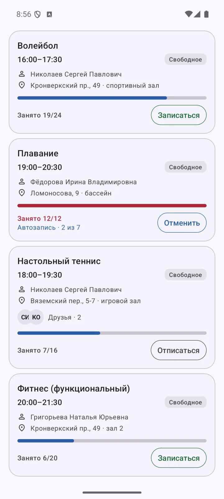
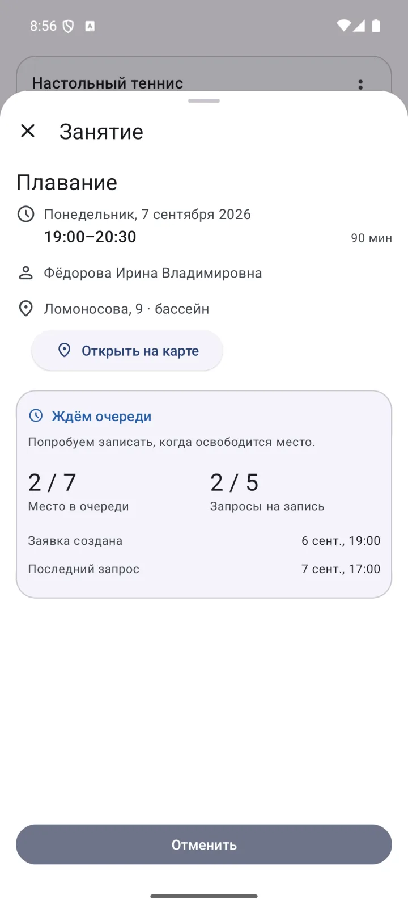
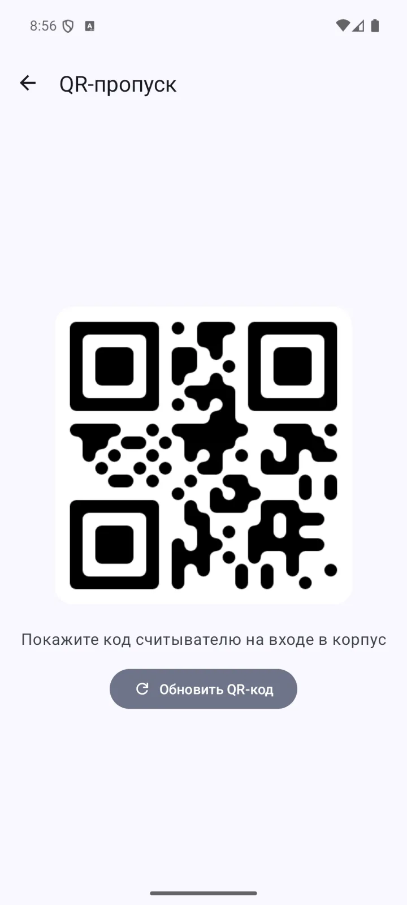

Расписание
Пары с подробностями
Расписание по дням с таймлайном, работает офлайн. Тап по паре — преподаватель, аудитория, «Открыть на карте», видеозвонок и друзья на той же паре.

Для студентов ИТМО на Android. Всё нужное на сегодня — на главном экране и в виджетах, без открытия сайта.
Неофициальное приложение, не связано с Университетом ИТМО. Вход через ITMO.ID, пароль приложению не нужен.

Расписание по дням с таймлайном, работает офлайн. Тап по паре — преподаватель, аудитория, «Открыть на карте», видеозвонок и друзья на той же паре.
Каталог занятий с фильтрами и свободными местами. Мест нет — автозапись займёт место, когда оно появится, и пришлёт уведомление.

Место в очереди, история попыток, условия записи. Отменить запись или очередь можно прямо из расписания и с главного экрана.

Предметы семестра с баллами из 100, контрольные точки с минимумами, физкультура из баллов по спорту. Чип «БАРС» накладывает оценки из БАРС.

У каждого предмета две вкладки: баллы по контрольным точкам и расписание — преподаватели и ближайшие пары на четыре недели.

Код кэшируется и открывается сразу, даже без сети. Виджет со «спойлером» не светит код на домашнем экране.

Добавляйте друзей по имени, смотрите их расписание и записи на спорт, если они это разрешили. Друзья видны на паре и на занятии. Кто видит ваши данные — выбираете вы: все, друзья или никто.
Заявки в друзья и результаты автозаписи приходят уведомлениями.


Три виджета: следующая пара, расписание на день и QR-пропуск. Обновляются сами по границам пар, показывают ожидающие автозаписи, размер текста настраивается.


Android 8.0 и новее. О новых версиях приложение сообщает само.
Вход идёт через ITMO.ID в браузере, как на сайте my.itmo.ru. Приложение получает только токен и хранит его на телефоне.
Друзья, друзья на паре, очереди на спорт и уведомления. Это отдельный сервер, он включается в настройках и выключается там же.
Вы встаёте в очередь на заполненное занятие или на ещё не опубликованное. Сервер проверяет места и записывает вас через MyITMO, а приложение присылает уведомление. Лимит попыток и условия видны в деталях занятия.
Нет. Проект студенческий, с открытым кодом, и не связан с университетом. Данные берутся из тех же сервисов, что открывает браузер.
Растяните виджет на нужное число ячеек и выберите размер текста в его настройках.
Проверьте, что сервисы включены и разрешены уведомления: подсказка об этом есть на главном экране, а каналы настраиваются в системных настройках.